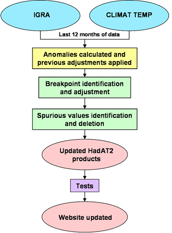

Introduction
1 - Deriving our initial station network
2 - HadAT0 - raw station and gridded products
3 - Quality control on HadAT0 station timeseries
4 - HadAT1 - homogenised station and gridded timeseries
5 - Expanding the station network to create HadAT2
6 - Updating HadAT2 as a monthly product
7 - HadAT2 near real time updates
8 - Small change in source data
This page provides a full audit trail of all the decisions made in constructing and updating HadAT. Most users will not require all this information.
This audit trail is designed to be complete and accessible but we always welcome feedback that can improve the information presented. An editorial decision was made to present this audit trail description as a single long page to avoid endless clicking through links. This ensures that all information is available in the one place. Large data files are always presented as a choice of either ASCII (compressed) or netcdf files. In the netcdf files we have attempted to strictly adhere to the CF 1.0 conventions. Where files are large we have always tried to indicate the file size.
Please note that this webpage should be read in conjunction with the HadAT dataset paper, which provides further detail and justification of a number of the technical decisions we made. If there are any conflicts then the description in the paper takes precedence unless specifically noted otherwise (we may have made mistakes here and as it hasn't been strictly peer reviewed they are less likely to have been spotted and rectified).
Timeseries and information up until HadAT2 data are limited to a seasonal or annual temporal resolution and to the beginning of 2002 (when the HadAT homogenisation analysis commenced). Only HadAT2 is available on a monthly resolution and updated in near real-time as outlined in Section 6.
We subsampled all datasets to the 9 common levels (850, 700, 500, 300, 200, 150, 100, 50, and 30hPa). Only data recorded since 1958, the International Geophysical Year, was used. The reasons are two-fold: firstly, coverage dramatically degrades prior to this date and secondly there was a global 3 hour shift in observation times (from 0300/1500 UTC to 0000/1200 UTC) in 1957.
To date we have limited our analyses to those stations for which it was possible to create a 1966-1995 climatology for at least one level and one of the digital sources considered. To create a climatology required a monthly value for a given month (e.g. December) to exist for at least 5 years of each decade over the climatology period. A full listing of these stations is given as part of the file hadat_station_information.txt which is supplementary table 1 in Thorne et al., 2005. For a description of the file contents please read the JGR readme file.
We used annual layer thickness anomaly timeseries for the troposphere (700 to 300hPa) and the stratosphere (300 to 100hPa) to define a set of station series that were grossly consistent with a core network of LKS (87 station network) and GUAN stations that had been previously analysed and quality controlled. A small subset of these LKS and GUAN stations were found to be dubious in comparison to their "neighbours" and were deleted completely or in part - details are given in supplementary information Table 2 (again see the JGR readme file).
Decisions as to inclusion in our first station set were based upon the similarity of the station series to the resulting modified neighbour thickness composites in the troposphere and the stratosphere (see section 3.1 in Thorne et al., 2005). The decisions are given in the microsoft excel file decisions.xls. Please note that this file contains a suite of visual basic macros. These do not need to be enabled for the file to be viewed. Please see the README sheet in this file for further explanation of how to interpret the results.
HadAT0 Data files are available in the ukmo-hadat archive.
We analysed the station minus neighbour average difference series with the aid of a Kolomogorov-Smirnov test applied over a moving 30-season window to make our assessments as to break-point locations and the adjustments to be applied. We also used available metadata to help us in our decisions as well as our knowledge of events such as volcanoes, ENSO etc. Further details are given in Thorne et al. 2005 description of the dataset construction. This step inevitably involved subjective decisions being made as to the timing and existence of breakpoints within the individual station series.
We used an iterative approach whereby the adjustments were calculated and deletions for gross errors identified. These were then applied; the station, neighbours, and neighbour difference series recalculated; and the procedure repeated until all stations were deemed to be sufficiently similar to their neighbour based estimates. Again, more details are available in Thorne et al., 2005. Adjustments were calculated using a bootstrap-type approach and were only assigned if a number of tests were passed, as described in Thorne et al., 2005.
The formatting of the adjustments files is described in the file format_adjustments_files.txt. The files for each iteration of our procedure are linked below:
The final adjustments which are the sum of all deletions and adjustments given in the above files are given in the files hadat1_adjustments.nc (3.1 Mb) and hadat1_adjustments.txt.gz (2.3 Mb, compressed). Adjustments have been applied as a seasonally invariant change to all data preceding the breakpoint identified and are addative. Note that as necessary these station series have been renormalised at each iteration and in these final files so that they all have a zero 1966-95 climatology. These climatology adjustments are given in the files.
HadAT1 Data files are available in the ukmo-hadat archive.
The raw station timeseries are available as hadat2_raw_stations.nc (1.3 Mb) or hadat2_raw_stations.txt.gz (0.5 Mb, compressed).
To homogenise these station timeseries we used HadAT1 as a neighbour network, with all HadAT1 stations
contributing to the stratospheric neighbours. (See section 3 for the neighbour coefficients). In all
other respects our procedure was identical to that employed in HadAT1. The formatting of the adjustments
files is also identical to that employed for HadAT1
(see format_adjustments_files.txt).
The final adjustments which are the sum of all deletions and adjustments given in the above files are
given in the files hadat2_adjustments.nc (X.Y Mb) and hadat2_adjustments.txt.gz (X.Y Mb, compressed) - files to be made available.
The adjusted HadAT2 stations were added to the HadAT1 station series to create HadAT2.
HadAT2 Data files are available in the ukmo-hadat archive.
The final set of seasonal HadAT2 adjustments were applied to the raw monthly anomaly values that were originally used do derive the seasonal values. Deletions were applied to all three monthly values within each deleted season. The 1966-1995 climatologies were then recalculated to create the HadAT2 monthly product.
Some of the original HadAT data sources are now unsuitable for updating HadAT2. GUAN is only available until 2001, the CARDS (and hence MONADS) dataset is no longer being updated, and the LKS dataset only contains data until 1997. The CARDS sucessor, Integrated Global Radiosonde Archive (IGRA), has therefore been used to update the HadAT2 stations which orginally contained data from GUAN and LKS as well as MONADS. A comparison between MONADS and IGRA data for a selection of HadAT2 stations showed no significant systematic differences on monthly timescales.
The HadAT2 monthly product was frozen until December 1999 and has been updated with new data from January 2000 onwards. The exception was the stations that originally contained data from the LKS dataset, as these were updated from January 1998 (see section 1 for a list of stations and sources). The new absolute temperature data was converted into anomaly space by subtracting the monthly station climatologies below. The monthly gridded climatologies are also available. (Warning: Climatology values may contain absolute biases as the homogenisation analysis is performed in anomaly space so cannot perfectly correct for absolute biases).
HadAT2 Station Climatologies Data files are available in the ukmo-hadat archive.
HadAT2 Gridded Climatologies Data files are available in the ukmo-hadat archive.
To produce fully homogeneous dataset it was deemed necessary to develop some basic quality checks, similar to the ones employed in the initial seasonal dataset development. A neighbour difference series was calculated, as in the original quality control proceedure. A running first difference series was produced using 12 months values either side of each point, and a critical value was derived at each station and level from the 95th percentile of the pre-2000 absolute values of this series (which are assumed homogeneous following the completion of the QC). Any points within the new post-2000 data that exceeded this critical value at 3 or more pressure levels were flagged as being a suspected breakpoint. Manual intervention was required make the decision whether to adjust each of these potential breakpoints, by analysing plots of the difference series. See Figure 2 in the report on the updating of HadAT in near real-time for an example.
The adjustments were calculated using the same method as in the orignal dataset development (see Thorne et al., 2005 for more details). A period of up to 3 years (36 months) either side of each breakpoint (trucated if there was another breakpoint identified within this period) was used unless the breakpoint identified was within the most recent 36 months. In these cases a period of 1 year (12 months) was used, although the adjustments will be recalculated in subsequent updates when a full 36 months worth of data following the breakpoint become available. No breakpoints are identified within the most recent 12 months as a 24-month window is required for their identification.
Each adjustment was subtracted from all the points in the station series after and including the identified breakpoint (Note: post-200 adjustments are subtacted and not added). Hence our monthly HadAT2 product has been adjusted to December 1999. The neighbour difference series was recalculated and any spurious values after 2000 that were equal to or greater than 3.5 standard deviations of the pre-2000 data were automatically deleted. The pre-2000 HadAT2 monthly product was combined with the new quality controlled data (post-2000) to create the updated HadAT2 monthly product.

HadAT2 is now updated in near real time on a quarterly basis. Each quarter the previous 12 months of data is retrieved from the IGRA and CLIMAT TEMP databases. The temperatures are converted to anomalies using the monthly climatologies.
The raw station monthly timeseries that have been used to update HadAT2 are available as update_raw_stations. nc (2.2 Mb) or update_raw_stations.txt.gz (compressed, 1.1 Mb). (Note: These files are updated periodically when HadAT2 is updated. All stations have been updated with data from January 2000 with the exception of the LKS stations, which have been updated from January 1998 - see section 6 above.)
Any previously calculated adjustments are applied to the anomalies (except those which require recalculating with the full 36 months of data either side of the identfied breakpoint). The anomalies are then passed through our quality control system, as described in the section above.
The formatting of the update adjustment files is described in the file
format_update_adjustment_file.txt. The file itself is linked below (Note: this file is updated periodically when HadAT2 is updated).
The quality controlled data is used to update the current station series, which is then gridded. Various other products, including the zonal mean timeseries, the global mean time series and the tropical mean timeseries are also created. (See the HadAT2 data page for all the monthly HadAT2 products that are updated in near real time.) A series of tests (currently under development) are applied to the HadAT2 products before the website is updated. There is a typical lag of approximately 2 months so that, for example, the data for January becomes available at the end of March or the beginning of April. The data is updated quarterly unless a specific request for an update is received.